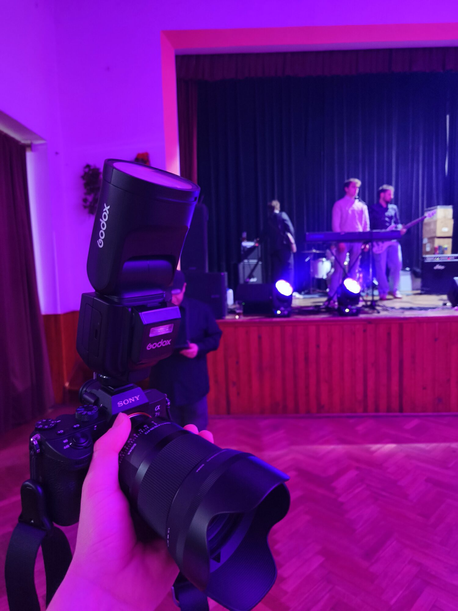

Fotografii beru jako způsob, jak se dívat pozorněji — ať už mířím do hlediště, do oblak, nebo nahoru ke hvězdám.
Nedržím se jednoho žánru. Bavilo by mě to míň. Jednu noc stojím s dlouhou expozicí uprostřed lesa a čekám, až se ukáže jádro Mléčné dráhy, další víkend létám s dronem nad zříceninou hradu a v sobotu večer stojím pod pódiem s bleskem v ruce. Za víc než 8 let jsem tak nafotil přes 50 000 snímků napříč žánry — a právě tohle spojení dělá mfPhotography tím, čím je.
Dlouhé expozice, tma mimo dosah světel měst a hodně trpělivosti při čekání na jasnou oblohu.
Pohled na krajinu, který pěšky nezískáte — kompozice shora odhaluje jiné vzorce a měřítka.
Rychlé rozhodování za špatného světla — zachytit ten správný okamžik, který se neopakuje.
Pomalejší tempo, práce se světlem a hledání výrazu, který sedí ke konkrétnímu člověku.